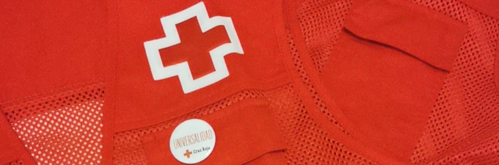

我的志愿经历：奉献爱心，改变世界
志愿服务在我的个人与职业成长中扮演了重要角色。通过这些经历，我不仅有机会为社区贡献力量，还学到了团队合作、组织能力和同理心等宝贵的经验。
西班牙红十字会：健康与环境保护
作为西班牙红十字会的志愿者，我参与了多个项目，重点关注治疗依从性和健康生活习惯的推广。我负责监督患者确保其遵循治疗方案，并参与了关于均衡饮食和垃圾分类的宣传活动。此外，我还参与了公共空间保护工作，为环境保护贡献了自己的力量。
第22届寄生虫学会议
在这个活动中，我作为志愿者发挥了重要作用，特别是在IT服务支持和志愿者协调方面。这段经历不仅让我将技术知识应用于实践，还帮助我提升了领导能力。
抗击COVID-19
在疫情期间，我作为志愿者参与了北京雁栖医院的疫苗接种疏导工作。我负责引导接种者，提供有关接种流程的信息，并确保他们理解并签署知情同意书。这段经历对我意义深远，因为我有机会在这场全球危机中为他人提供帮助。
"帮助有需要的人不仅是责任的一部分，更是幸福的一部分。"
—— 何塞·马蒂